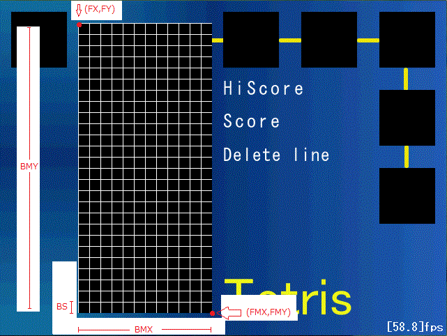

さぁクラスを定義していきましょう。
このへんの構想をしっかりしないと、後で大変になります。
まず、座標を表すクラスPointを創ります。
次にPointクラスからBlockクラスを派生させます。
包含してもいいけど、こうさせてくださいorz・・・継承が好きなんです。
また、PointクラスからさらにTetriMinoクラスを派生させます。
TetriMinoクラスはblockクラスを4つ包含します。
また、様々な処理を行うために必要な変数を持っています。
Blockクラスは色を表すkndを持ちます。
enum列挙子で色(RED〜SKY)を定義して、
その型としてkndを設定します。
kndはRED〜SKYしか値を取り得ません(内部的にはintの数値だけど・・)
編集するのはclass.hとdefine.hです。
//class.h
・
・
・
//座標クラス
class Point{
public:
//座標
int x,y;
private:
//コピー関数
template<class T,class U>
void copy(const T& x,const U& y){
this->x=static_cast<int>(x);
this->y=static_cast<int>(y);
}
public:
//コンストラクタ
Point(){
copy(0,0);
}
//コピーコンストラクタ
Point(const Point& p){
copy(p.x,p.y);
}
//2引数を取るコンストラクタ
template<class T,class U>
Point(const T& x,const U& y){
copy(x,y);
}
//[=]演算子オーバーロード
Point& operator=(const Point& p){
copy(p.x,p.y);
return *this;
}
//[()]演算子オーバーロード
template<class T,class U>
Point& operator()(const T& x,const U& y){
copy(x,y);
return *this;
}
//デストラクタ
virtual ~Point(){}
};
//ブロッククラス
class Block : public Point{
public:
//色
BLK_COL knd;
//コンストラクタ
Block():Point(),knd(RED){}
Block(const Point& p,BLK_COL k):Point(p),knd(k){}
//デストラクタ
virtual ~Block(){}
};
//テトリミノクラス
class TetriMino : public Point{
public:
//構成する4つのブロック
Block blk[4];
//カウンタ・着地してからの猶予時間
int cnt,wait;
//画面内有効フラグ
bool flag;
//フィールド座標
bool field[5][5];
//コンストラクタ
TetriMino():cnt(0),wait(0),flag(false){
memset(field,false,sizeof(bool)*5*5);
}
//デストラクタ
virtual ~TetriMino(){}
};
//define.h
・
・
・
//ブロックの色
enum BLK_COL{
RED=0,
GREEN,
PURPLE,
BLUE,
ORANGE,
YELLOW,
SKY,
};
//ブロックの色の数
#define BLK_KND_NUM 7
//ブロックサイズ
#define BS 16
//ゲーム画面内に並ぶブロック数
#define BMX 12
#define BMY 26
//ゲーム画面左上座標
#define FX 112
#define FY 32
//ゲーム画面右下座標
#define FMX 304
#define FMY 448
Pointクラスは(無駄に)コピーコンストラクタ等を定義していますが、
これをしておくと直感的に扱えて楽になります。
Blockクラス内のBLK_COL型が色を扱う型です。
TetriMinoクラス内のいろいろな変数はテトリミノの操作の時に使います。
定義類はコメントを見ればわかると思います。
BSはブロックの一辺のサイズ(正方形)の大きさ。
「ゲーム画面内に並ぶブロック数」とは実際にテトリミノが動く画面が何マス分かです。
最大12*26=312個のブロックが画面上に存在できるということです。
言葉でぐだぐだ言ってもわかりづらいので、図をつけます↓

そして、グローバル変数として現在のテトリミノとフィールド上のブロックを保持するlistを創ります。
//main.h
//標準ヘッダー
#include <list>
using namespace std;
・
・
・
//GV.h
・
・
・
//現在のテトリミノ
E TetriMino cur;
//フィールド上のブロック
E list<Block> blkList;
今回はここまでです。
次回は実際にcurを扱っていきたいと思います。